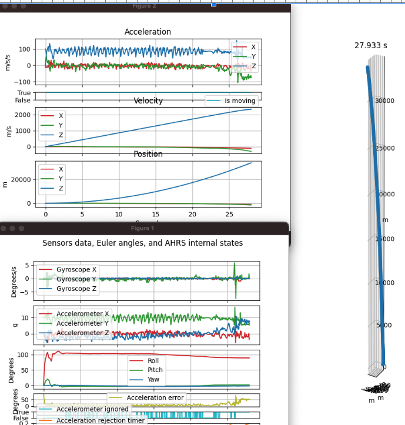
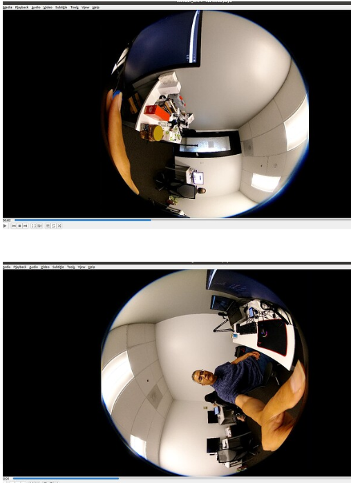

RICOH THETA Video

CaMM Data in Videos
- Official THETA Metadata Specification
- THETA X stores IMU data in CaMM format
- Community example of extracting data
- GitHub
- Note that the example above was produced with a Z1 using a special two fisheye video format specified here
Using exiftool
exiftool -ee -V3 path/to/your/video.MP4 > path/to/results.txt
Output
Track2 Type='camm' Format='camm', Sample 1 of 3642 (16 bytes)
147e567: 00 00 02 00 00 00 00 00 00 00 00 00 00 00 00 00 [................]
SampleTime = 0
SampleDuration = 0
camm2 (SubDirectory) -->
- Tag 'camm' (16 bytes):
147e567: 00 00 02 00 00 00 00 00 00 00 00 00 00 00 00 00 [................]
+ [BinaryData directory, 16 bytes]
| AngularVelocity = 0 0 0
| - Tag 0x0004 (12 bytes, float[3]):
| 147e56b: 00 00 00 00 00 00 00 00 00 00 00 00 [............]
Track2 Type='camm' Format='camm', Sample 2 of 3642 (16 bytes)
147e577: 00 00 03 00 00 13 c7 3f c0 27 9e 40 00 28 e3 3d [.......?.'.@.(.=]
SampleTime = 0
SampleDuration = 0.005
camm3 (SubDirectory) -->
- Tag 'camm' (16 bytes):
147e577: 00 00 03 00 00 13 c7 3f c0 27 9e 40 00 28 e3 3d [.......?.'.@.(.=]
+ [BinaryData directory, 16 bytes]
| Acceleration = 1.55526733398438 4.94235229492188 0.110916137695312
| - Tag 0x0004 (12 bytes, float[3]):
| 147e57b: 00 13 c7 3f c0 27 9e 40 00 28 e3 3d [...?.'.@.(.=]
Z1 CaMM Data

community information on single-fisheye dual video recording
Z1 is capable of an unusual video format that produces 2 single fisheye videos with CaMM data. The videos need to be stitched in the customer’s own cloud. RICOH does not provide an SDK or example for the stitching. However, lens information is available to help with the process.
Auto-Level
In the THETA X, video _topBottomCorrection can be controlled with the THETA API. If set to on, the video will be processed inside the camera to auto-level the video.
If you intend to upload the THETA X video to Google Street View with Street View Studio, community members recommend that _topBottomCorrection be enabled. As of September 2024, it does
not appear that Google Street View Studio handles level correction post-processing based on the IMU sensor data.
If you plan to handle level compensation in your own application or want the original camera orientation in the
video frames, then turn _topBottomCorrection off.
Comparing 8K and 5.7K
Available video file formats are listed in the official THETA API documentation. In addition to 8K at 10fps, 5fps, and 2fps, there is also 5.7K video at low framerates.
Although the 8K video offers higher resolution, there are tradeoffs to consider before immediately jumping to the 8K video format.
The 5.7K video offers a smaller video size. Community tests suggest that the 5.7K video is around 30% of the 8K video. Smaller file sizes may be useful in reducing data transmission times or hardware requirements for video processing.
The 5.7K video also consumes less power, increasing battery use of the RICOH THETA X. Community tests show that the 5.7K 2fps video consumes 2.5W compared to 3.4W for 8K 2fps.
Warning
File size and power consumptiion are estimates based on community testing. The community information on power consumption and file size in this document are not official camera specifications from RICOH. Please contact RICOH for official information on the RICOH THETA camera.
Temporal Noise Reduction (TNR) in 5.7K Video
From THETA X firmware v2.51.0, the 5.7K 2/5/10fps video enables TNR (temporal noise reduction), which balances resolution and noise. As of September 2024, the TNR algorithm cannot be changed or disabled. If your application processes video frames in low-light conditons, it could be worthwhile to take 8K and 5.7K video of the same scene for assessment.
This could be useful in construction, restoration, pipes, tunnels, or disaster areas.
Video Frame Extraction
There are many solutions to extract video frames. ffmpeg is a popular open source package. There's an example of video frame extraction in the community.